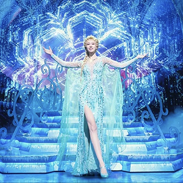
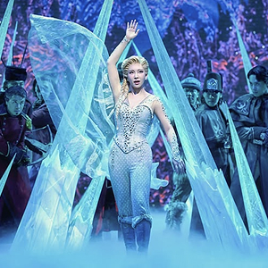
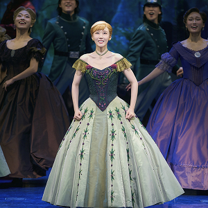
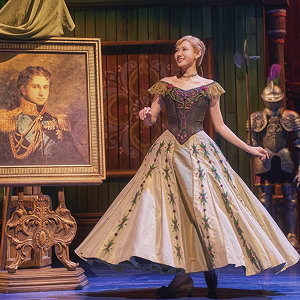
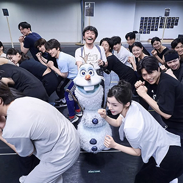
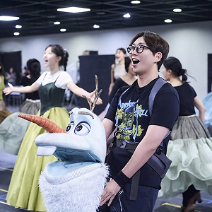
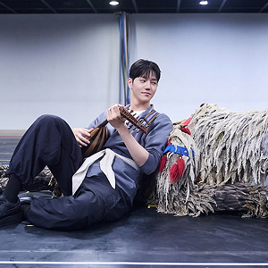
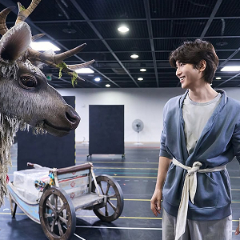
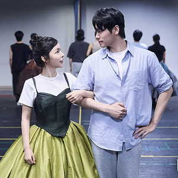
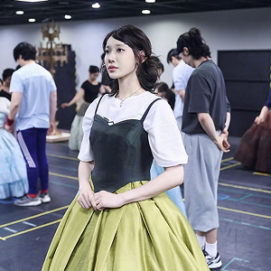

아카이브
아카이브
HOME > 아카이브 > 포토/영상갤러리
포토/영상갤러리Photo & Video Gallery
무대 위 순간들을 사진과 영상으로 다시 만나보세요.
이번 시즌, 무대 위의 가장 빛나는 순간
무대 위에서 펼쳐진 가장 빛나는 장면들을 영상으로 만나보세요
- 무대스틸컷
- [뮤지컬 겨울왕국 2026] 한국 초연 30초 공연 𝐒𝐏𝐎𝐓❄️
SCENE ARCHIVE
포토와 영상으로 다시 만나는 무대








